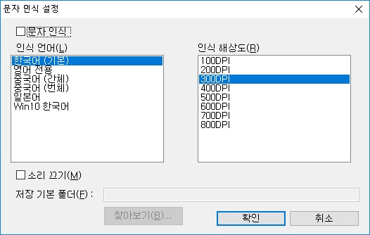

ⅡⅩ장 센스리더 더 넥스트 사용법
ⅡⅩ-1. 센스리더 더 넥스트 소개
센스리더 더 넥스트는 프로페셔널의 모든 기능과 더불어 문자 인식 OCR(Optical Character Recognition)과 제어 기능을 지원하여 사무직 종사자가 고가의 장비를 마련하지 않아도 타인의 도움 없이 인쇄물의 내용을 확인할 수 있으며 접근성이 미흡한 응용 프로그램이나 웹 사이트등 시각장애인이 홀로 접근 및 활용이 불가능하던 컨텐츠를 이용할 수 있도록 도와 줍니다.
센스리더 더 넥스트 버전에서 지원하는 주요 기능은 다음과 같습니다.
1. 문자 인식 OCR(Optical Character Recognition)기능 지원
국내 최초로 한국어, 영어등 다국어를 지원하는 OCR기능을 추가하므로써 별도의 기기 없이 컴퓨터만으로도 사진이나 이미지의 내용을 손쉽게 확인할 수 있게 되었습니다.
또한 접근성이 미흡한 웹 사이트나 응용프로그램을 활용할 수 있도록 화면 판독과 동시에 제어할 수 있는 기술이 적용되어 타인의 도움 없이 시각장애인이 컴퓨터를 활용할 수 있는 폭을 대폭 넓혔습니다.
2. 윈도우즈7 부터 윈도우즈11(32/64bit) 운영체제 지원
윈도우즈8.1, 윈도우즈10 및 윈도우즈11 운영체제를 지원함으로써 급변하는 컴퓨터 환경에 우리 시각장애인들도 능동적으로 대처할 수 있는 토대를 마련했습니다.
3. 점자정보단말기와의 완벽한 연동
학업이나 업무를 효율적으로 처리하기 위해서는 컴퓨터 음성만으로 정보를 습득해서는 불충분하며 점자의 사용이 필수적입니다.
센스리더는 이를 위해 Braille note, 한소네 브레일, 씽크 브레일, Seika 등 점자정보단말기와의 완벽한 연동 기능을 제공합니다.
4. GOM 플레이어, 다음 팟 플래이어 및 메신저 지원 기능 강화
창 크기 조절이나 환경 설정 등의 번거로운 작업이 필요없이 손쉽게 자막 있는 동영상과 메신저 대화를 즐길 수 있습니다.
5. 센스 독서기 기능 강화
오디오 파일 이퀄라이저 재생 기능과 오디오 CD 및 동영상 파일의 MP3 변환 기능, 실시간 MP3 녹음 기능 등의 다양한 멀티미디어 관련 기능들이 추가되어 센스 독서기만으로도 충분히 멀티미디어 컨텐츠를 즐길 수 있습니다.
또한 이미지로 구성된 인쇄물과 각종 청구서 및 우편물등 시각장애인 홀로 확인할 수 없엇던 각종 인쇄물 또한 스캔이나 카메라등을 이용해 파일 형식으로 저장 후 문자 인식기능을 통해 내용을 확인할 수 있게 하므로써 멀티미디어 기능과 더불어 다방면으로 활용이 가능하도록 하였습니다.
6. 인터넷 지원 기능 강화
웹 컨텐츠 접근성 지침에서 요구하고 있는 대부분의 내비게이션 기능을 지원하고, 국내 인터넷 상황에 맞도록 다양한 편의 기능이 구현되어 있으며, 플래시, 플랙스, 실버라이트 등의 플러그인 개체 지원 기능도 갖추고 있어 인터넷 활용이 한층 편리해졌습니다.
또한 접근성이 확보되지 않은 웹 사이트를 이용시 문자 인식과 제어 기능을 통해 웹 서핑이 가능하도록 구현하므로써 독보적인 자체접근성을 성립 하고 활용성 또한 극대화하였습니다.
7. 다양한 TTS 엔진 탑재
VoiceWare사의 영어(Kate) 및 일어(Misaki) 음성엔진을 추가함으로써 보다 질 높은 어학 학습이 가능해졌습니다. 한국어도 '혜련' 음성엔진을 추가해 사용자들의 선택권을 향상시켰습니다.
8. 센스 사전 추가
동아 프라임 데이터를 라이센스하여 신뢰성이 높고, 센스리더의 기능과 연동하여 편리하게 사용할 수 있는 사전(영한, 한영, 국어, 노래방) 프로그램을 추가하였습니다.
9. MS-OFFICE 및 한글 워드프로세서 지원 기능 강화
학습 및 직장생활에서 필수적으로 이용되고 있는 오피스 및 한글 워드프로세서에 대해 특성화된 접근 방식을 채택함으로써 접근성과 활용성을 증진시켰습니다.
10. 즐겨찾기 기능 지원
기존 웹 사이트에서만 제공하던 즐겨찾기 기능을 웹 사이트는 물론 자주 사용하는 응용 프로그램에서도 사용할 수 있어 컴퓨팅 환경을 보다 쉽게 만들어 줍니다.
11. 클라우드 환경 관리 지원
사용자가직접 설정한 환경 설정파일을 USB 이동식 장치 없이 센스리더의 클라우드 기능을 통해 언제든지 백업하고 다시 복원할 수 있어 보다 효율적인 환경 관리가 가능합니다.
12. 원격 서비스 지원 기능
그동안 구현이 어려웠던 원격 서비스를 자체 개발하여 탑재하므로써 컴퓨터에 문제가 발생한 경우 사용자간 연결 또는 전문 상담원과의 직접 연결을 통해 보다 능동적인 대처가 가능합니다.
13. 일정 관리 기능
원하는 날짜/시간에 알림을 받고, 컴퓨터를 사용하는 시간을 관리하며, 양력/음력 날짜를 손쉽게 확인할 수 있는 일정 관리 기능을 제공합니다.
ⅡⅩ-2. 화면판독 및 제어기능 활용하기
센스리더 더 넥스트는 리뷰 모드에서 지원되지 않았던 화면을 인식하고 음성으로 내용을 출력하며 키보드로 제어가 가능하게 되므로써 접근성이 미흡한 응용프로그램에 대한 자체접근성이 보장됩니다.
이 기능을 이용하여 현재 활성화된 응용프로그램을 이용할 수 있으며 사용되는 기능키는 다음과 같습니다.
사용되는 기능키
| 기능키 | 설명 |
|---|---|
| Ctrl + Alt + Shift + NP-(키패드 대시) | 현재 화면을 인식하기 위해 문자인식 모드를 선택 / 해제하는 토글키로 사용됩니다. |
| Ctrl + Alt + Shift + NP+(키패드 플러스) | 문자인식 모드에서 사용할 해상도를 조정합니다. 한번에 100DPI씩 증가하며 100DPI에서 800DPI까지의 범위 내에서 조정이 가능 합니다. |
| Ctrl + Alt + Shift + NP ENTER(키패드 앤터) | 문자인식 설정 대화상자를 호출하며 대화상자에서 언어와 해상도, 소리끄기등을 설정할 수 있습니다. |
위의 기능키와 같이 인식하고자 하는 프로그램을 활성화한 후 문자인식 모드를 on합니다.
이 후 윈도우 읽기, 읽기 모드, 리뷰 모드등을 활용하여 인식된 내용을 음성으로 확인할 수 있으며, 각 프로그램별로 최적의 환경을 저장하여 추후 제설정의 번거로움을 해소할 수 있습니다.
또한 Tab키로 접근할 수 없는 객체의 경우 "마우스 왼쪽버튼 클릭"기능을 활용하여 제어할 수 있으며, "마우스 위치기억"을 통해 나만의 환경을 만들어 자주 사용하는 프로그램에 대한 자체 접근성을 구축할 수 있습니다.
문자인식 설정

문자인식 설정 대화상자를 통해 "문자인식모드 활성화", "인식 언어", "인식 해상도", "소리 끄기"등의 설정이 가능 합니다.
대화상자의 설정을 통해 한번에 설정값을 변경할 수 있으며 각각의 옵션값은 다음과 같습니다.
| 옵션 | 설명 |
|---|---|
| 문자 인식 모드(O) 체크상자 | 문자인식 모드를 선택 / 해제할 수 있으며 스페이스바를 이용하여 선택, 해제할 수 있습니다. (기능키 "Ctrl + Alt + Shift + NP-(대시)와 동일) |
| 인식 언어(L) 목록상자 | 문자인식 모드에서 사용되는 기본 언어를 지정할 수 있으며 기본값은 "한국어"로 설정되어 있습니다. 상, 하키를 이용하여 기본 언어를 변경할 수 있으며 별도의 선택과정은 필요하지 않습니다. |
| 인식 해상도(R) 목록상자 | 문자인식모드에서 사용되는 해상도를 설정할 수 있으며, 기본 해상도는 300DPI로 설정되어 있습니다. 상, 하키를 이용하여 해상도를 변경할 수 있으며 별도의 선택과정은 필요하지 않습니다. |
| 해제 소리 끄기(M) 체크상자 | 문자인식모드를 이용하여 화면을 인식하는 과정 중 발생하는 효과음을 선택 / 해제할 수 있습니다. 스페이스바를 이용하여 선택, 해제가 가능하며, 선택시 효과음은 출력되지 않습니다. |
각각의 설정항목은 Tab키를 이용하여 이동할 수 있으며 설정이 완료된 경우 "확인"버튼에서 앤터키를 눌러 설정을 완료하거나, "취소"버튼을 눌러 종료할 수 있습니다.
ⅡⅩ-3. 이미지 파일 문서로 변환하기
더 넥스트는 보유중인 스캐너, 스마트폰을 이용하여 생성한 이미지 파일을 텍스트 파일등 문서 파일로 변환이 가능하며, 이렇게 생성된 파일은 일반 텍스트 파일과 같이 문서 편집기를 통해 편집이 가능합니다.
또한 설정을 통해 100DPI부터 800DPI중 원하는 해상도로 변환하므로써 이미지마다 최적의 결과물을 얻을 수 있습니다.
단일 이미지를 변환하거나, 여러 이미지를 폴더에 넣어 하나의 파일로 모든 이미지 변환이 가능하며 이미지나 폴더에서 팝업(popup)키를 눌러 메뉴를 호출 합니다.
※ 더 넥스트 v5.3 이상은 여러 이미지를 선택 후 변환할 경우 전체 이미지를 하나의 txt파일로 생성할 뿐만 아니라 각각의 이미지 파일명과 동일한 txt파일리 생성되어 파일 관리가 더욱 수월해 졌습니다.
- 스캐너를 통해 스캔한 이미지 파일이 있는 폴더로 이동합니다.
- 스캔한 이미지파일에 포커스하고 팝업키를 누릅니다.
- 상, 하키를 이용하여 센스리더 문자 인식(S) 풀다운 메뉴 까지 이동하여 엔터를 누릅니다.
- 이미지 파일 텍스트 파일로 변환(T) 메뉴에서 엔터를 누릅니다.
- 효과음과 함께 변환이 시작되며, 인식 해상도나 이미지에 내용에 따라 변환시간의 차이가 있을 수 있습니다.
- 변환이 완료되면 아래 그림과 같이 "변환 완료"대화상자가 호출되며, 상, 하키를 이용하여 변환된 내용을 바로 확인할 수 있습니다.
- 변환된 파일은 텍스트(TXT) 형식으로 저장되며 위치는 원본 이미지 파일과 동일한 곳에 생성됩니다.
완료 대화상자에서 생성된 텍스트(TXT)파일은 "파일 삭제(D)"를 통해 삭제할 수 있으며 "닫기"를 통해 대화상자를 닫고 파일을 직접 열어 확인 할 수 있습니다.
※이미지 파일을 텍스트 파일로 변환할 때의 기본 해상도는 300DPI로 되어 있으나 사용자가 임의로 변경할 수 있으며, 해상도 변경을 위해서는 센스리더 문자 인식(S) 풀다운 메뉴 내의 이미지 문자 인식 설정(O) 메뉴릃 이용합니다.
이미지 문자 인식 설정(S) 메뉴구성
| 옵션 | 설명 |
|---|---|
| 인식 언어(L) 목록상자 | 문자인식 모드에서 사용되는 기본 언어를 지정할 수 있으며 기본값은 "한국어"로 설정되어 있습니다. 상, 하키를 이용하여 기본 언어를 변경할 수 있으며 별도의 선택과정은 필요하지 않습니다. |
| 인식 해상도(R) 목록상자 | 문자인식모드에서 사용되는 해상도를 설정할 수 있으며, 기본 해상도는 300DPI로 설정되어 있습니다. 상, 하키를 이용하여 해상도를 변경할 수 있으며 별도의 선택과정은 필요하지 않습니다. |
| 해제 소리 끄기(M) 체크상자 | 문자인식모드를 이용하여 화면을 인식하는 과정 중 발생하는 효과음을 선택 / 해제할 수 있습니다. 스페이스바를 이용하여 선택, 해제가 가능하며, 선택시 효과음은 출력되지 않습니다. |
설정이 완료된 경우 "확인"버튼을 눌러 설정내용을 저장할 수 있으며 "취소"를 눌러 설정 항목을 저장하지 않고 끝낼 수 있습니다.
ⅡⅩ-4. 인터넷에서 이미지나 그래픽 링크 내용 확인하기
웹 서핑을 하다보면 어디서나 쉽게 이미지를 찾아볼 수 있습니다.
어떤 이미지는 설명이 제공되어 시각장애인 홀로 이미지의 내용을 인지할 수 있는 반면 어떤 이미지는 설명이 제공되지 않아 시각장애인 홀로 이미지의 내용을 인지할 수 없는 문제가 있습니다.
이러한 불편 요소들을 해소하고자 센스리더 더 넥스트는 웹 서핑시 문자인식 기능을 통해 시각장애인이 홀로 이미지나 그래픽 링크에 대한 내용을 인지할 수 있도록 사용성을 극대화 시켰습니다.
또한 이미지 레이블을 사용자의 선호도에 따라 편집/ 수정할 수 있어 사용자에 특성에 맞는 인터넷 환경을 구현할 수 있게 되었습니다.
인터넷에서 사용되는 기능키와 설정값은 다음과 같습니다.
문자 인식에 사용되는 기능키
| 설 명 | 브라우저 탭 키 | 가상커서 탭 키 |
|---|---|---|
| 이미지 문자인식 | F8 | F8 |
| 문자인식 해상도 증가 | Ctrl + Alt + Shift + F10 | Ctrl + Alt + Shift + Y |
- 상, 하 방향키를 이용하여 인식하고자 하는 이미지에 포커스를 합니다.
- 콘트롤 정보 읽기 단축키 또는 공통인 F8키를 이용하여 이미지 문자 인식을 진행 합니다..
- 인식 결과에 대한 저장, 수정을 원하실 경우 "Ctrl + G"키를 이용하여 내용을 수정하고 탭키를 눌러 확인에서 앤터를 누릅니다.
기본적인 기능키와 사용 방법은 위와 같으며 센스리더 베이직, 프로페셔널의 인터넷 활용에 대한 자세한 설명은 가상커서 탭키의 기능키 보기와 브라우저 탭키의 기능키 보기를 참고하시기 바랍니다.
또한 가상커서 설정 대화상자의 "설정" 메뉴를 통해 "인식 해상도 자동증가"와 같은 설정을 진행할 수 있으며 각각의 옵션과 설명은 다음과 같습니다.
| 옵션값 | 설 명 |
|---|---|
| 문자 인식 해상도 = 300DPI | 이미지 인식의 해상도를 증가하거나 감소할 수 있습니다. 기본적으로는 기능키로 조정할 수 있으나 해당 옵션을 설정하시어 기본 인식 해상도를 조정할 수 있습니다. 설정은 "스페이스바"를 이용하며 100DPI부터 800DPI 범위내에서 조정이 가능 합니다. |
| 인식 해상도 자동 증가 | <td align="center"해당 옵션값은 기본적으로 선택되어 있으며, 반복적으로 이미지를 인식 할 때마다 인식 해상도가 "100dpi"씩 자동으로 증가하게 됩니다. 선택/해제는 "스페이스바"를 이용하며 값은 100DPI부터 최대 800DPI 범위 내에서 변경 됩니다. |
| 인식 결과 자동 저장 | <td align="center"해당 옵션값을 선택하면 인식한 이미지의 "그래픽 레이블"을 자동으로 저장하며, 추후 사이트에 방문시 저장된 레이블 정보를 사용자에게 음성으로 안내하게 됩니다. 저장된 "그래픽 레이블"정보는 해당 이미지나 그래픽 링크에서 "Ctrl + G"키를 이용하여 수정이 가능합니다. |
센스리더 더 넥스트는 이미지 목록을 호출하여 목록에서 해당 이미지를 인식할 수 있으며, "이미지 목록 호출"키와 이미지 단위 이동키는 다음과 같습니다.
| 설 명 | 브라우저 탭 키 | 가상커서 탭 키 |
|---|---|---|
| 이미지 목록 호출 | /(슬래시) | Insert + /(슬래시) |
| 이미지 단위 이동 | .(마침표) | Insert + .(마침표) |
위의 기능키를 이용하여 페이지내에 제공된 이미지 목록을 별도로 호출할 수 있으며, 이미지 단위 이동을 통해 원하는 위치로의 이동을 자유롭게 할 수 있습니다.
※ 이미지 목록 호출과 이미지 단위 이동의 경우 센스리더 베이직, 프로페셔널, 더 넥스트에서 이용하실 수 있으나 이미지 목록을 호출하여 해당 이미지의 문자인식 기능은 더 넥스트 버전에서만 이용이 가능 합니다.
센스리더 더 넥스트의 이미지 목록 호출과 이용방법

- 원하는 사이트로 이동한 후 "이미지 목록 호출"키를 이용하여 메뉴를 활성화 합니다.
- 상, 하키를 이용하여 인식하고자 하는 이미지로 이동 합니다.
- 이미지에 포커스한 후 탭키를 눌러 "콘트롤 정보(I) 버튼"에서 앤터를 누르거나 "Alt + I"키를 눌러 이미지에 대한 문자 인식을 진행 합니다.
- 이미지에 대한 문자 인식이 완료되면 이미지 목록에 파일명과 확장자로 표기되던 이미지가 인식된 내용으로 변경되어 있습니다.
- 해당 이미지에 등록된 레이블을 삭제하고자 하시는 경우 탭키를 눌러 "레이블 삭제(D) 버튼"에서 앤터를 누릅니다.
- 해당 이미지로의 이동을 원하시는 경우 탭키를 눌러 이동(M) 버튼"에서 앤터를 누릅니다.
- 이미지 목록 대화상자를 닫기 위해서는 탭키를 눌러 "닫기(C) 버튼"에서 앤터를 누르거나 "ESC"키를 눌러 대화창을 닫을 수 있습니다.
ⅡⅩ-5. 센스 스캐너 활용하기
센스 스캐너는 가정이나 사무실에서 사용하는 스캐너를 통해 사용자가 직접 문서를 스캔할 수 있도록 도와줍니다.
일반적으로 스캐너 제조사에서 제공하는 프로그램을 통해서 문서나 사진의 스캔이 가능하나 센스 스캐너는 스캔과 동시에 문자 인식을 하여 문서 내용을 사용자에게 음성으로 출력합니다.
이러한 기능을 통해 문서를 스캔하고, 저장된 이미지를 별도로 인식하는 번거로운 과정을 한번의 작업으로 손쉽게 해결할 수 있게 되었습니다.
센스 스캐너에 대한 자세한 사용방법은 ⅡⅠ장 센스 스캐너 사용법에서 확인하실 수 있습니다.